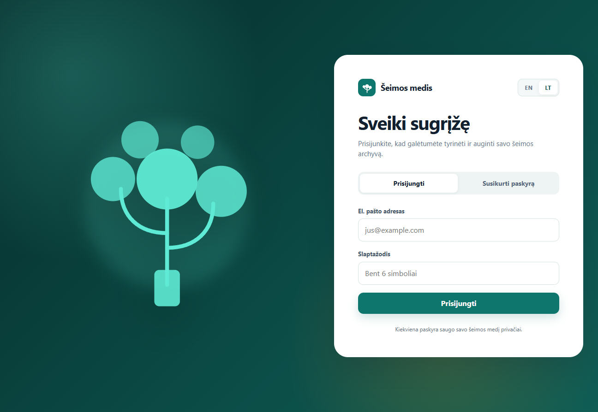
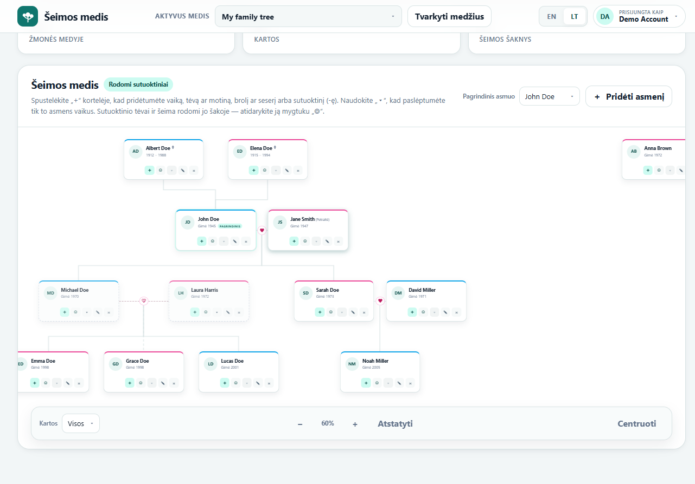
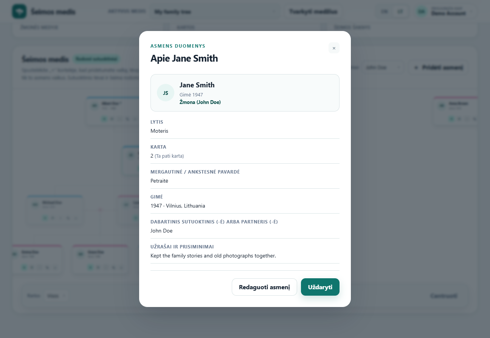
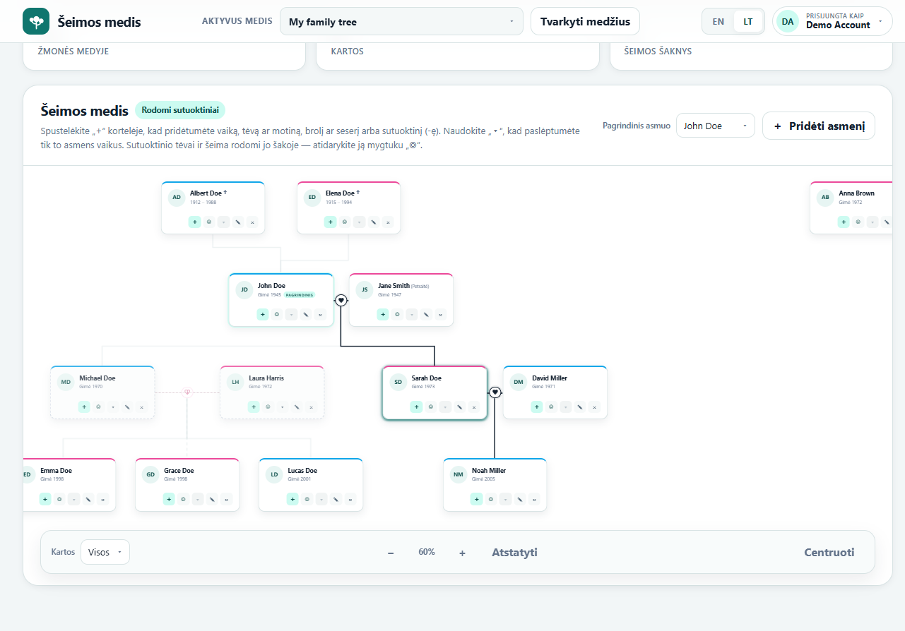
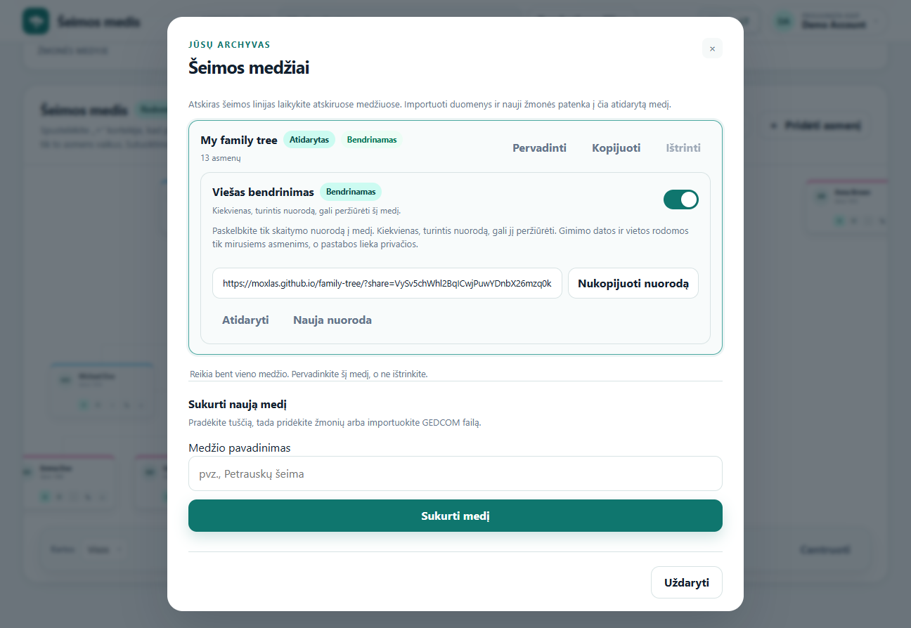
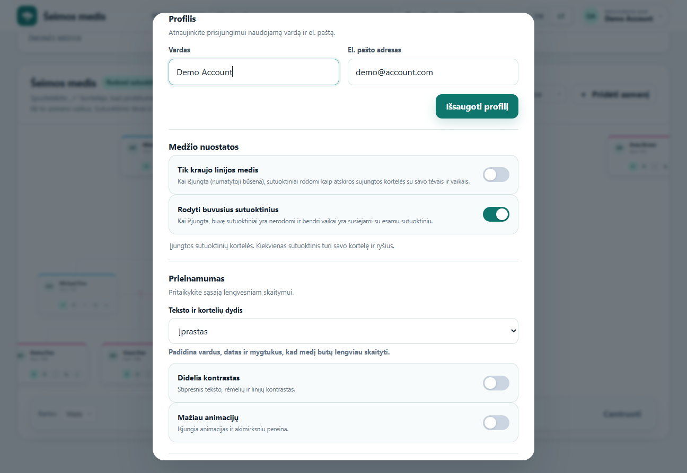
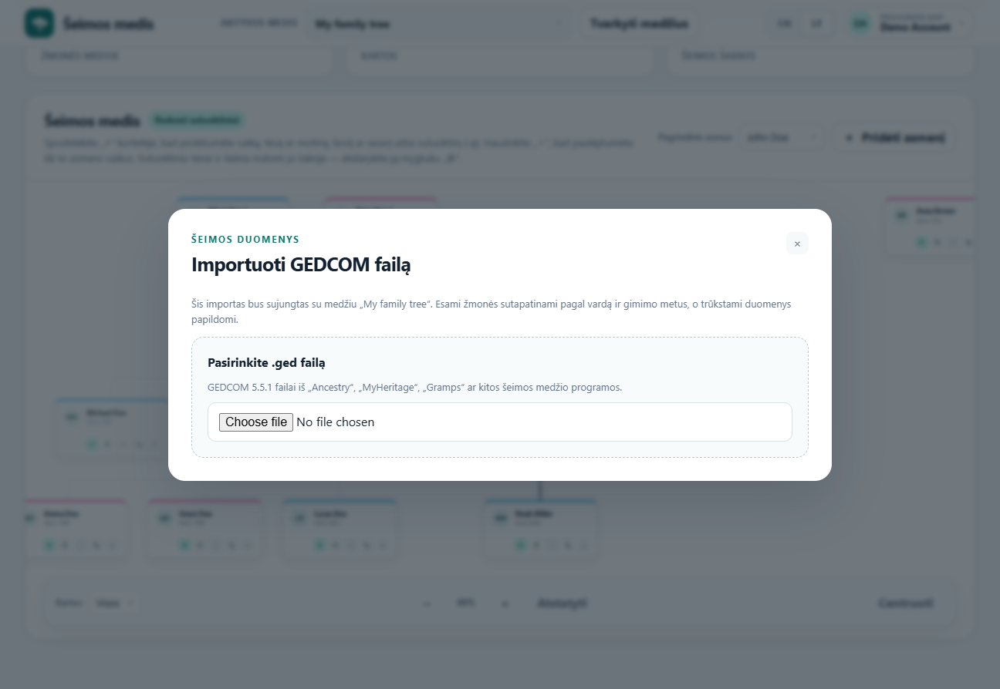

Kurkite savo šeimos istoriją — po vieną žmogų
„Šeimos medis“ yra privati vieta, kurioje galite kaupti vardus, datas, istorijas ir giminystės ryšius. Šis vadovas padės kasdien naudotis programa.
Atverkite programą adresu https://moxlas.github.io/family-tree/.
1. Sveiki atvykę
Su „Šeimos medžiu“ galite:
- laikyti vieną ar kelis šeimos medžius;
- pridėti asmenis ir įrašyti jų vardus, datas, vietas bei pastabas;
- susieti tėvus, vaikus, sutuoktinius ir buvusius sutuoktinius;
- sekti protėvius bei palikuonis aiškiame šeimos žemėlapyje;
- rinktis, kurie duomenys rodomi ir kaip atrodo medis;
- pasidalyti vieno medžio peržiūros nuoroda;
- įkelti šeimos duomenis iš GEDCOM failo.
Programa kalba lietuvių ir anglų kalbomis. Kalbą galite pakeisti bet kada.
2. Kaip pradėti

3. Medis iš arti
Drobėje šeima rodoma aiškiame žemėlapyje. Kiekvienas asmuo turi kortelę. Širdelė tarp dviejų kortelių reiškia santuoką arba partnerystę. Linijos jungia tėvus su vaikais.
Pagrindinis asmuo — tai žmogus, kuriuo centruotas vaizdas. Jį galite pakeisti įrankių juostoje. Jo kortelė turi mažą žymą.
Ankstesnė arba mergautinė pavardė rodoma šalia dabartinės, pavyzdžiui Janė Mikienė (Doe).

4. Asmenų pridėjimas
Naudokite įrankių juostos + Pridėti asmenį arba kortelės mygtuką +, kad pridėtumėte giminaitį reikiamoje vietoje.
Apie kiekvieną asmenį galite įrašyti:
- vardą, pavardę ir ankstesnę (mergautinę) pavardę;
- lytį;
- gimimo ir mirties datas bei vietas;
- ar asmuo yra miręs;
- pastabas ir šeimos ryšius.
Spauskite bet kurią kortelę, kad perskaitytumėte asmens duomenis. Ten galite juos redaguoti, pakeisti pagrindinį asmenį arba pridėti giminaičių.

5. Šeimos ryšiai
Asmenis galite susieti kaip tėvus, vaikus ir partnerius:
- asmuo gali turėti du tėvus;
- asmuo gali turėti kelis sutuoktinius ar partnerius;
- dabartiniai ryšiai rodomi pilna širdele;
- buvę ryšiai (skyrybos, našlystė, išsiskyrimas) rodomi sulaužyta širdele ir brūkšnine linija.
Kai pridedate vaikų porai, programa juos susieja su abiem partneriais. Jei santykiai pasibaigė, galite palikti juos kaip buvusius, kad šeimos istorija išliktų pilna.
6. Medžio naršymas
Įrankių juosta leidžia įvairiai pažiūrėti tą pačią šeimą:
- Pagrindinis asmuo: pasirinkite, kas bus vaizdo centre.
- Fokusas: rodoma tik vieno asmens šaka — jo protėviai, palikuonys ir artimi giminaičiai.
- Vaikų suskleidimas: kortelės rodyklė slepia arba rodo to asmens vaikus.
- Tik giminės linija: sutuoktinių kortelės slepiamos ir lieka tiesioginė giminė.
- Buvę sutuoktiniai: nustatymuose galite rinktis, ar juos rodyti.
- Kartos: rodomas nustatytas kartų skaičius arba drobė nusprendžia pati.
- Mastelis: priartinkite arba atitolinkite. Pasirinkimas įsimenamas šioje naršyklėje.
7. Kortelės pasirinkimas
Spauskite kortelę — ji liks pasirinkta, kol paspausite kitą. Jos ryšiai švies net ir tada, kai nuvedate pelę šalin. Dideliame medyje taip daug lengviau sekti giminystės liniją.
Jei pelę užvedate ant kitos kortelės, trumpam paryškinama ji; nuvedus pelę vėl paryškinami pasirinktos kortelės ryšiai.
Paspauskite Esc, kad nuimtumėte pasirinkimą.

8. Medžių tvarkymas
Viršutinėje juostoje atverkite Medžių tvarkymas. Čia yra jūsų šeimos archyvas. Galite:
- sukurti naują medį;
- atverti kitą medį;
- pervadinti medį;
- dubliuoti medį;
- ištrinti medį.
Dubliavimas sukuria atskirą pasirinkto medžio kopiją. Nukopijuojami visi asmenys, šeimos, ryšiai ir pagrindinis asmuo. Originalas lieka nepakitęs. Kopijos pavadinimas baigiasi „(kopija)“, ji prasideda kaip privati ir iškart atsidaro.
Visada turite turėti bent vieną medį. Jei turite tik vieną, geriau jį pervadinti, o ne ištrinti.

10. Išvaizda ir patogumas
Viršutinėje juostoje atverkite Nustatymus, kad programą būtų patogiau naudoti:
- Teksto ir kortelių dydis: standartinis, didelis arba didžiausias.
- Didesnis kontrastas: ryškesnis tekstas, rėmeliai ir linijos.
- Mažesnis judėjimas: pašalinami slinkimo ir išnykimo efektai.
- Kalba: perjungimas tarp lietuvių ir anglų kalbų.
Šie pasirinkimai išsaugomi jūsų paskyroje, todėl „seka“ jus prisijungus kitame įrenginyje.

11. GEDCOM failai
Jei jau turite šeimos duomenų GEDCOM faile, galite juos įkelti į šiuo metu atvertą medį.
- Importas: pasirinkite
.gedfailą — programa pridės asmenis ir ryšius prie jūsų medžio. - Importas papildo medį: užpildo trūkstamus duomenis ir atpažįsta tuos pačius vardus bei gimimo metus turinčius asmenis. Jis nepakeičia to, ką jau turite.
- Eksportas: bet kada atsisiųskite pasirinktą medį kaip GEDCOM failą.

12. Pavyzdžiai žingsnis po žingsnio
13. Dažniausi klausimai
Kur rasti bendrinimą?
Atverkite Medžių tvarkymas. Bendrinimas nustatomas atskirai kiekvienam medžiui.
Kodėl bendrinamoje nuorodoje trūksta kai kurių duomenų?
Gyvų asmenų privatūs duomenys slepiami tyčia, pastabos niekada nebendrinamos, o ryšių datos ir vietos rodomos tik tada, kai bent vienas partneris yra miręs.
Bendrinama nuoroda nebeveikia. Kodėl?
Bendrinimas galėjo būti išjungtas arba sukurta nauja nuoroda. Atverkite Medžių tvarkymas, patikrinkite būseną ir nukopijuokite dabartinę nuorodą.
Ar galima ištrinti paskutinį medį?
Ne. Visada turi likti bent vienas medis. Jei norite pradėti iš naujo, geriau jį pervadinkite.
Ar mastelis išsaugomas paskyroje?
Ne. Mastelis įsimenamas dabartinėje naršyklėje atskirai privatiems medžiams ir bendrinamoms nuorodoms. Rodymo ir prieinamumo nustatymai saugomi paskyroje.
Programa atrodo pasenusi. Ką daryti?
Atnaujinkite puslapį: Ctrl+F5 „Windows“ arba Cmd+Shift+R „Mac“.